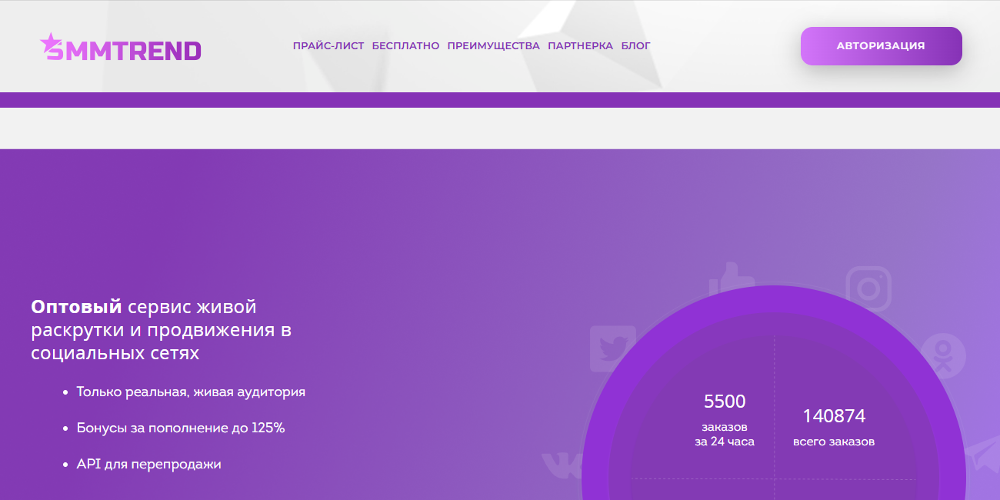
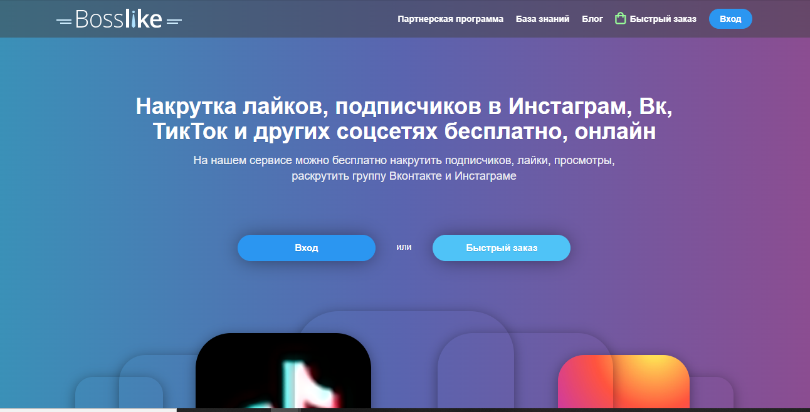
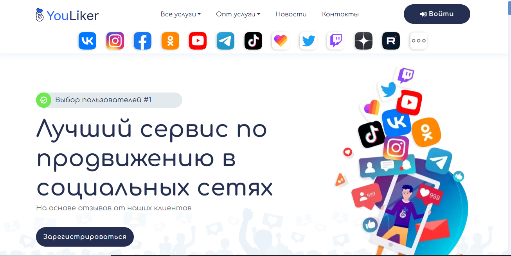
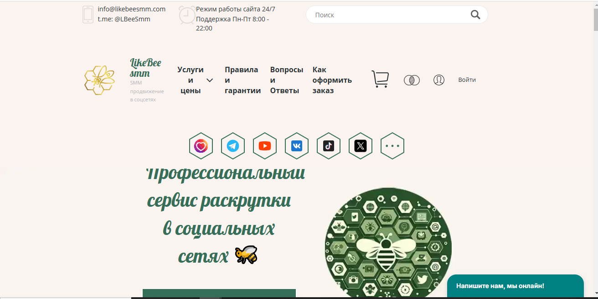

Наша редакция провела исследование и подготовила рейтинг лучших сервисов 2025 года по накрутке репостов в ВКонтакте. Репосты помогают увеличить охваты, привлекать активных пользователей и способствуют эффективному продвижению контента. В этом обзоре мы рассмотрим сервисы, которые предоставляют качественную и безопасную накрутку репостов, обеспечивая гарантии выполнения и удобные инструменты для пользователей. Такие платформы позволяют быстро заказать накрутку, повышая популярность аккаунта и вовлеченность аудитории. Узнайте, какие сервисы предлагают лучшие условия для эффективного продвижения в социальных сетях.
SMMTrend
Официальный сайт: https://smmtrend.com

Рейтинг сервиса: 4.8
Стоимость накрутки репостов: от 0,90 руб. до 1,23 руб. за 1 репост
Пробный период: есть
Что ещё можно накручивать (кроме репостов):
- подписчики
- друзья
- лайки
- комментарии
- просмотры видео
- голоса в опросах
- прослушивания
Описание сервиса:
SMMTrend — это сервис, предоставляющий услуги по накрутке активности в социальных сетях, включая ВКонтакте. Платформа предлагает как бесплатные, так и платные варианты накрутки, обеспечивая быстрый запуск и мгновенную доставку. Сервис ориентирован на пользователей, желающих быстро увеличить аудиторию своих каналов и групп, предоставляя различные пакеты услуг с гарантией качества.
Краткая инструкция по шагам по накрутке в этом сервисе:
- Авторизуйтесь на сайте или зарегистрируйтесь, если у вас нет аккаунта.
- Пополните баланс удобным для вас способом, доступны различные платежные системы.
- Выберите нужную услугу, например, накрутка репостов ВКонтакте.
- Укажите ссылку на ваш пост или страницу в ВКонтакте.
- Настройте параметры заказа, такие как количество репостов.
- Нажмите кнопку «Заказать» и отслеживайте прогресс выполнения в личном кабинете.
Особенности и преимущества:
- Широкий выбор социальных сетей для накрутки, включая ВКонтакте и другие платформы.
- Быстрая доставка накрутки с гарантией качества.
- Удобный интерфейс с возможностью выбора разных пакетов услуг.
- Простая регистрация и возможность бесплатного тестирования.
- Широкий спектр дополнительных опций, включая голоса в опросах и репосты.
Недостатки:
- Некоторые пользователи сообщают о задержках в доставке накрутки в периоды высокой нагрузки.
FoxSMM
Официальный сайт: https://foxsmm.ru
Рейтинг сервиса: 4.8
Стоимость накрутки репостов: 1.9 руб. за 1 репост
Пробный период: нет
Что ещё можно накручивать (кроме репостов):
- подписчики
- лайки
- друзья
- просмотры поста
- просмотры видео
- просмотры клипа
Описание сервиса:
FoxSMM — это сервис, предоставляющий услуги по накрутке активности в популярных социальных сетях, включая ВКонтакте, Telegram, Instagram, TikTok, YouTube и Likee. Платформа предлагает быстрый запуск заказов, гарантируя 100% успешное выполнение. Сервис ориентирован на пользователей, желающих увеличить популярность своих аккаунтов и сообществ, предоставляя различные пакеты услуг с гарантией качества.
Краткая инструкция по шагам по накрутке в этом сервисе:
- Перейдите на сайт FoxSMM и выберите нужную услугу, например, накрутка репостов ВКонтакте.
- Укажите ссылку на материал (запись, фото или видео), который хотите продвинуть.
- Укажите количество репостов, которое хотите заказать (минимум 10, максимум 20 000).
- Нажмите кнопку «Продолжить» и следуйте дальнейшим инструкциям для оформления заказа.
Особенности и преимущества:
- Широкий выбор услуг для различных социальных сетей.
- Моментальный запуск выполнения заказа.
- Анонимность и безопасность использования сервиса.
- Гарантия возврата денег в случае неудачного выполнения заказа.
- Удобный интерфейс для быстрого оформления заказов без регистрации.
Недостатки:
- Отсутствие пробного периода для новых пользователей.
- Возможность списаний при использовании тарифа «Эконом».
Bosslike
Официальный сайт: https://bosslike.ru

Рейтинг сервиса: 4.7
Стоимость накрутки репостов: от 0,05 руб. до 1,20 руб.
Пробный период: есть
Что ещё можно накручивать (кроме репостов):
- лайки
- подписчики
- просмотры
- комментарии
- голоса в опросах
- друзья
- реакции
Описание сервиса:
Bosslike — это сервис для продвижения в социальных сетях, работающий по принципу взаимного обмена. Платформа позволяет пользователям обмениваться лайками, репостами и подписками, что способствует быстрому увеличению популярности аккаунтов и контента. Сервис предоставляет как бесплатные, так и платные варианты накрутки, обеспечивая быстрый старт и мгновенную доставку.
Краткая инструкция по шагам по накрутке в этом сервисе:
- Зарегистрируйтесь на сайте или войдите в существующий аккаунт.
- Выполняйте задания других пользователей, чтобы заработать баллы, или пополните баланс для платных услуг.
- Создайте новое задание, указав ссылку на ваш контент и выбрав тип накрутки (например, репосты).
- Настройте параметры заказа, такие как количество репостов и стоимость за выполнение.
- Запустите задание и отслеживайте его выполнение в личном кабинете.
Особенности и преимущества:
- Возможность бесплатной накрутки через систему взаимного обмена.
- Поддержка множества социальных сетей, включая ВКонтакте, Instagram и TikTok.
- Удобный и простой в использовании интерфейс.
- Быстрая доставка услуг и мгновенный запуск заданий.
- Возможность выбора между бесплатными и платными вариантами накрутки.
Недостатки:
- Риск получения неактивных или ботовых подписчиков.
- Возможность блокировки аккаунта при чрезмерной активности накрутки.
SMMchik
Официальный сайт: https://smmchik.ru

Рейтинг сервиса: 4.8
Стоимость накрутки репостов: от 0,00 руб. до 0,00 руб.
Пробный период: есть
Что ещё можно накручивать (кроме репостов):
- подписчики
- лайки
- друзья
- комментарии
- просмотры
- опросы
- прослушивания музыки
Описание сервиса:
SMMchik — это сервис, предоставляющий бесплатные и платные услуги по накрутке в социальных сетях, включая ВКонтакте. Платформа предлагает живую аудиторию для накрутки лайков, подписчиков, комментариев и просмотров, обеспечивая безопасное продвижение без риска попадания под фильтры социальных сетей. SMMchik помогает увеличить активность и популярность в онлайн-сообществах, предоставляя инструменты для быстрого и эффективного увеличения аудитории.
Краткая инструкция по шагам по накрутке в этом сервисе:
- Перейдите на сайт SMMchik и выберите нужную социальную сеть, например, ВКонтакте.
- Выберите услугу, которую хотите накрутить, например, репосты.
- Укажите ссылку на ваш пост или страницу, где требуется накрутка.
- Настройте параметры заказа, такие как количество репостов.
- Нажмите кнопку «Накрутить бесплатно» или «Накрутить платно» в зависимости от выбранного варианта.
- Отслеживайте прогресс выполнения заказа в личном кабинете.
Особенности и преимущества:
- Предоставление живой аудитории для накрутки, что обеспечивает высокое качество услуг.
- Бесплатные и платные варианты накрутки, позволяющие выбрать оптимальный способ продвижения.
- Безопасное продвижение без риска блокировки или попадания под фильтры социальных сетей.
- Широкий спектр услуг, включая накрутку подписчиков, лайков, комментариев и просмотров.
- Удобный интерфейс и простой процесс заказа услуг.
Недостатки:
- Для получения бесплатной накрутки необходимо смотреть рекламу и выполнять задания, что может занять дополнительное время.
SMMPortal
Официальный сайт: https://smmportal.net
Рейтинг сервиса: 4.8
Стоимость накрутки репостов: от 0,04 руб. до 0,08 руб.
Пробный период: нет
Что ещё можно накручивать (кроме репостов):
- подписчики
- лайки
- просмотры
- друзья
- опросы
- комментарии
- клипы
Описание сервиса:
SMMPortal — это сервис, предоставляющий услуги по накрутке в популярных социальных сетях, включая ВКонтакте. Платформа предлагает безопасные методы продвижения, обеспечивая быстрый запуск и высокое качество услуг. Сервис ориентирован на пользователей, желающих эффективно увеличить активность и популярность своих аккаунтов и сообществ.
Краткая инструкция по шагам по накрутке в этом сервисе:
- Зарегистрируйтесь на сайте SMMPortal.net.
- Пополните баланс удобным для вас способом.
- Выберите нужную услугу, например, накрутка репостов ВКонтакте.
- Укажите ссылку на ваш пост или страницу в ВКонтакте.
- Настройте параметры заказа, такие как количество репостов.
- Нажмите кнопку «Заказать» и отслеживайте прогресс выполнения в личном кабинете.
Особенности и преимущества:
- Широкий спектр услуг для различных социальных сетей.
- Быстрый старт и высокая скорость выполнения заказов.
- Безопасные методы накрутки с гарантией качества.
- Удобный интерфейс и простая навигация по сайту.
- Доступные цены и различные тарифные планы.
Недостатки:
- Отсутствие пробного периода для новых пользователей.
BigLike
Официальный сайт: https://biglike.org

Рейтинг сервиса: 4.7
Стоимость накрутки репостов: от 0,04 руб. до 1,23 руб.
Пробный период: есть
Что ещё можно накручивать (кроме репостов):
- лайки
- подписчики
- друзья
- дизлайки
- просмотры
Описание сервиса:
BigLike — это онлайн-сервис для раскрутки в социальных сетях, работающий с Вконтакте, Instagram, YouTube и TikTok. Платформа предоставляет услуги по накрутке лайков, подписчиков, репостов и друзей, обеспечивая безопасную и качественную раскрутку. Сервис работает по принципу обмена: пользователи выполняют задания других участников, зарабатывая баллы, которые затем могут потратить на продвижение своих аккаунтов.
Краткая инструкция по шагам по накрутке в этом сервисе:
- Авторизуйтесь на сайте через любую социальную сеть.
- Заработайте баллы, выполняя задания других пользователей (например, ставя лайки или делая репосты).
- Создайте своё задание на накрутку, указав ссылку на контент и необходимое количество репостов.
- Назначьте цену в баллах за каждое выполнение задания.
- Опубликуйте задание и ожидайте выполнения от других пользователей.
Особенности и преимущества:
- Бесплатная раскрутка через систему обмена баллами.
- Поддержка нескольких популярных социальных сетей.
- Возможность накрутки различных показателей: лайков, подписчиков, репостов и др.
- Простой и интуитивно понятный интерфейс.
- Быстрая обработка и выполнение заданий.
Недостатки:
- Возможность отписок или удаления накрученных элементов со стороны пользователей.
- Необходимость регулярного посещения сайта для сохранения аккаунта и баллов.
YouLiker
Официальный сайт: https://youliker.ru

Рейтинг сервиса: 4.8
Стоимость накрутки репостов: от 0,25 руб. до 0,70 руб.
Пробный период: нет
Что ещё можно накручивать (кроме репостов):
- подписчики
- лайки
- просмотры
- комментарии
- голоса в опросах
- друзья
- боты
Описание сервиса:
YouLiker — это сервис, предоставляющий услуги по накрутке активности в различных социальных сетях, включая ВКонтакте, Instagram, YouTube и другие. Платформа предлагает быстрый старт накрутки, доступные цены и широкий спектр услуг для эффективного продвижения в соцсетях. Сервис ориентирован на пользователей, желающих увеличить популярность своих аккаунтов и сообществ, обеспечивая качественное и безопасное выполнение заказов.
Краткая инструкция по шагам по накрутке в этом сервисе:
- Зарегистрируйтесь на сайте или войдите в личный кабинет.
- Пополните баланс удобным для вас способом.
- Выберите нужную услугу, например, накрутка репостов ВКонтакте.
- Укажите ссылку на пост, который хотите продвинуть.
- Настройте параметры заказа, такие как количество репостов и скорость выполнения.
- Нажмите кнопку «Заказать» и отслеживайте выполнение в личном кабинете.
Особенности и преимущества:
- Широкий выбор услуг для различных социальных сетей.
- Быстрый старт накрутки и высокая скорость выполнения заказов.
- Доступные цены и возможность выбора качества накрутки.
- Удобный интерфейс и простой процесс оформления заказа.
- Конфиденциальность и безопасность данных клиентов.
Недостатки:
- Отсутствие пробного периода для новых пользователей.
- Возможность присутствия неактивных аккаунтов среди накрученных подписчиков или лайков.
Boost-like
Официальный сайт: https://boost-like.ru
Рейтинг сервиса: 4.8
Стоимость накрутки репостов: от 23 руб. за 100 репостов
Пробный период: нет
Что ещё можно накручивать (кроме репостов):
- подписчики
- лайки
- просмотры
- комментарии
- опросы
- реакции
- бусты
Описание сервиса:
Boost-like — это сервис, предоставляющий услуги по продвижению в популярных социальных сетях, включая ВКонтакте. Платформа предлагает накрутку подписчиков, лайков, просмотров, комментариев и других видов активности, обеспечивая быстрый старт и качественное выполнение заказов. Сервис ориентирован на пользователей, желающих увеличить популярность своих аккаунтов и сообществ в социальных сетях.
Краткая инструкция по шагам по накрутке в этом сервисе:
- Зарегистрируйтесь на сайте или войдите в личный кабинет.
- Пополните баланс удобным для вас способом, доступны различные платежные системы.
- Перейдите в раздел «Заказы» и нажмите «Новый заказ».
- Выберите социальную сеть ВКонтакте и нужную услугу, например, накрутка репостов.
- Укажите ссылку на ваш пост или страницу.
- Установите количество репостов в рамках доступных лимитов.
- Подтвердите заказ и отслеживайте его выполнение в личном кабинете.
Особенности и преимущества:
- Широкий спектр услуг для различных социальных сетей, включая ВКонтакте.
- Быстрое начало выполнения заказов, обычно в течение 1-15 минут после запуска.
- Возможность контролировать процесс выполнения через личный кабинет.
- Большой выбор способов пополнения счета, включая банковские карты и электронные кошельки.
- Круглосуточная техническая поддержка для решения возникающих вопросов.
- Интеграция по API для владельцев панелей, позволяющая перепродавать услуги.
Недостатки:
- Отсутствие пробного периода для новых пользователей.
- Возможны списания до 10-30% при накрутке подписчиков.
SMOService
Официальный сайт: https://smoservice.media
Рейтинг сервиса: 4.8
Стоимость накрутки репостов: от 0,49 руб. до 3,18 руб.
Пробный период: нет
Что ещё можно накручивать (кроме репостов):
- подписчики
- лайки
- просмотры видео
- комментарии
- заявки в друзья
- активность
- прослушивания
Описание сервиса:
SMOService — это онлайн-сервис, предоставляющий маркетинговые услуги по продвижению в социальных сетях для блогеров, музыкантов и предпринимателей. Сервис использует несколько крупных источников для рекламы и гарантирует своевременное выполнение любого заказа. Он предлагает услуги по раскрутке в различных социальных сетях, включая ВКонтакте, Инстаграм, Ютуб, ТикТок и другие. Сервис обеспечивает безопасные методы продвижения и привлечение целевой аудитории.
Краткая инструкция по шагам по накрутке в этом сервисе:
- Авторизуйтесь на сайте или зарегистрируйтесь, если у вас нет аккаунта.
- Пополните баланс удобным для вас способом; доступны различные платежные системы.
- Выберите нужную услугу, например, накрутка репостов ВКонтакте.
- Укажите ссылку на вашу запись, фото или видео во ВКонтакте.
- Настройте параметры заказа, такие как количество репостов и скорость выполнения.
- Нажмите кнопку «Оформить» и отслеживайте прогресс выполнения в личном кабинете.
Особенности и преимущества:
- Широкий выбор услуг для различных социальных сетей.
- Быстрое выполнение заказов с гарантией качества.
- Удобный интерфейс и система подписок для автоматизации продвижения.
- Дисконтная система скидок и бонусы за пополнение баланса.
- Круглосуточная поддержка и надежность сервиса.
Недостатки:
- Отсутствие пробного периода для новых пользователей.
- Высокая стоимость премиальных пакетов услуг.
LikeBeeSMM
Официальный сайт: https://likebeesmm.com

Рейтинг сервиса: 4.8
Стоимость накрутки репостов: от 23 руб. за 100 репостов
Пробный период: нет
Что ещё можно накручивать (кроме репостов):
- подписчики
- лайки
- просмотры
- комментарии
- голоса в опросах
- реакции
- друзья
Описание сервиса:
LikeBeeSMM — это сервис, предоставляющий услуги по продвижению в различных социальных сетях, включая ВКонтакте, Телеграм, Ютуб, ТикТок и другие. Платформа предлагает широкий спектр услуг, от накрутки подписчиков до увеличения просмотров и лайков, обеспечивая быстрый старт и доступные цены. Сервис ориентирован на пользователей, желающих эффективно продвигать свои аккаунты и контент в популярных соцсетях.
Краткая инструкция по шагам по накрутке в этом сервисе:
- Посетите сайт LikeBeeSMM и выберите нужную услугу, например, накрутка репостов ВКонтакте.
- Укажите ссылку на ваш пост или страницу, для которой требуется накрутка.
- Настройте параметры заказа, такие как количество репостов.
- Оформите заказ и произведите оплату удобным для вас способом.
- Отслеживайте прогресс выполнения заказа в личном кабинете или по уведомлениям от сервиса.
Особенности и преимущества:
- Широкий выбор услуг для различных социальных сетей.
- Доступные цены и возможность оптовых заказов.
- Быстрое выполнение заказов с гарантией качества.
- Удобный интерфейс и простота оформления заказов.
- Положительные отзывы пользователей о качестве услуг.
Недостатки:
- Отсутствие пробного периода для новых пользователей.
- Возможны отписки или списания при использовании некоторых услуг без гарантии.
Часто задаваемые вопросы
Как быстро накрутить репосты в ВКонтакте?
Быстрая накрутка репостов в ВКонтакте возможна с помощью специализированных сервисов, которые предлагают автоматическое увеличение числа репостов на публикации. Такие сервисы используют ботов или реальные аккаунты для обеспечения быстрого роста показателей. При выборе сервиса важно учитывать его надежность, чтобы избежать риска блокировки.
Зачем нужна накрутка репостов в ВКонтакте?
Накрутка репостов помогает увеличить охват публикации и привлечь больше внимания к контенту. Алгоритмы ВКонтакте воспринимают посты с большим количеством репостов как более популярные и продвигают их в ленте новостей. Это особенно полезно для блогеров, бизнеса и рекламных кампаний.
Какие способы накрутки репостов существуют?
Существует несколько способов накрутки репостов: использование платных сервисов, работа с ботами, обмен репостами в специальных группах и использование живой аудитории через конкурсы или розыгрыши. Каждый метод имеет свои преимущества и риски.
Как накрутка репостов влияет на продвижение?
Чем больше репостов у публикации, тем выше вероятность, что ее увидит широкая аудитория. Это способствует увеличению вовлеченности пользователей, росту подписчиков и улучшению общей видимости аккаунта в ВКонтакте.
Какие риски связаны с накруткой репостов?
Основной риск накрутки репостов – это возможность блокировки аккаунта или публикации, если используется некачественный сервис или накрутка выглядит неестественной. ВКонтакте активно борется с фальшивыми активностями, поэтому важно выбирать надежные способы накрутки.
Как выбрать надежный сервис для накрутки репостов?
При выборе сервиса важно обратить внимание на отзывы, гарантии безопасности и методы накрутки. Хороший сервис предлагает репосты от реальных пользователей, а не от ботов, что снижает риск санкций со стороны ВКонтакте.
Сколько стоит накрутка репостов в ВКонтакте?
Стоимость накрутки репостов зависит от сервиса, количества репостов и качества аудитории. Дешевые варианты обычно предлагают ботов, тогда как более дорогие пакеты обеспечивают репосты от реальных пользователей, что дает лучший эффект для продвижения.
Можно ли накрутить репосты бесплатно?
Да, существуют бесплатные способы накрутки репостов, такие как обмен репостами в специальных группах или участие в чатах взаимопомощи. Однако такие методы требуют времени и не всегда дают стабильный результат.
Какие существуют «белые» методы накрутки репостов?
«Белые» методы включают использование таргетированной рекламы, конкурсов, розыгрышей и создания вирусного контента, который пользователи захотят репостить сами. Эти способы безопасны и эффективны в долгосрочной перспективе.
Как накрутка репостов помогает бизнесу?
Для бизнеса накрутка репостов – это способ увеличить охват рекламных публикаций, привлечь новых клиентов и повысить лояльность аудитории. Большое количество репостов делает бренд более заметным и увеличивает доверие пользователей.
Можно ли накручивать репосты без риска блокировки?
Да, если использовать качественные сервисы с репостами от реальных пользователей или применять органические методы, такие как конкурсы и акции. Важно избегать резкого увеличения активности, чтобы алгоритмы ВКонтакте не заподозрили накрутку.
Как узнать, что репосты накручены?
Определить накрутку можно по активности пользователей: если публикация получила много репостов, но у нее мало лайков и комментариев, это может быть признаком искусственного увеличения показателей. Также можно проверить аккаунты, сделавшие репосты – если это пустые или фейковые профили, вероятно, использовалась накрутка.